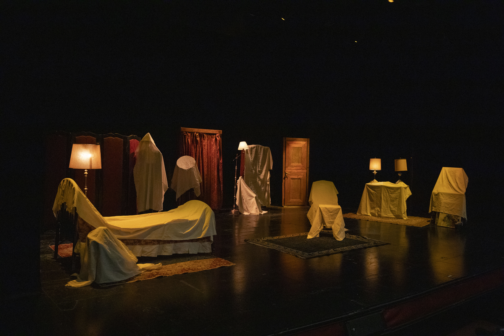
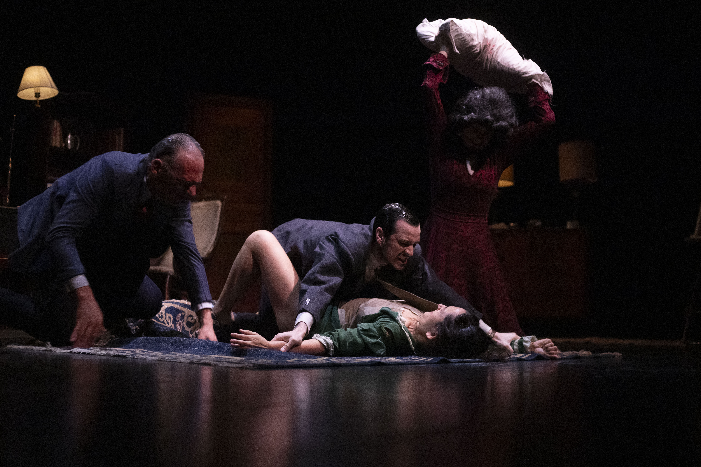
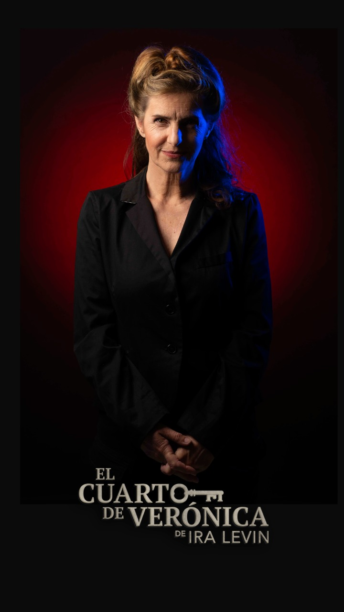

Here are the biggest enterprise technology acquisitions of 2021 so far, in reverse chronological order.
Read more





Static websites are now used to bootstrap lots of websites and are becoming the basis for a variety of tools that even influence both web designers and developers.
Read more